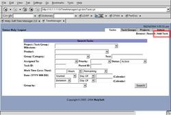

Adding a task involves filling out several sections. Most information is optional, but helps the task's owner better finish the task with more detailed requirements/specifications. When making changes to the task in the window, nothing will take effect until you click on 'Save' at the top or bottom of the screen. As well, all lists with text boxes and 'Add/Replace' buttons will not change in the system unless you click on 'Add' or 'Replace'.
- 'Add Task' Window
-
Show/Hide Sections
See Also:
- Filling in the general information
- Filling in the Timeline
- People/Resources
- Task Structure
- Notes
- Save Task
- Close Task Window
- 'Add Task' Window:
- Show/Hide Sections:
- Filling in the general information:
- Filling in the Timeline:
- People/Resources:
-
Task Owner: The task owner can be chosen through semi-automated assignment rules based upon what task category is set. The list will be confined to qualified workers. You can also check the workload (to evenly distribute) of the currently selected owner or all potential owners (if no owner is selected in the list), by clicking on the 'Workload' button next to the drop-down list.
-
Resources: To alter the 'Resources' section, type the resource's description in the text box below the 'Add/Replace/Remove'. After clicking on 'Add', it will show up in the list above. To alter an existing description of a resource, click on it's name in the list, and either click on 'Remove' or 'Replace' (after typing in something else in the textbox below).
-
URL/Web References: Altering the 'Web References' is similar to the 'Resources'. One types in what the reference is in the two text boxes (both a descriptive name and the URL address), and then clicks on 'Add' to add it to the list above. 'Replace' will put the contents of the text boxes into the list (replacing whatever is highlighted in the list). 'Remove' works after selecting something, and 'View Site' will open a new window to the web site once you select which one you want in the list.
-
Participants: The 'Participants' define who else is involved. A person is added by clicking on 'Add' once their name is selected in the drop-down list, and removed from the participant list when you click on 'Remove' after selecting their name from the above list.
- Task Structure:
- Notes:
- Save Task:
- Close Task Window:
From the main window, you can add a task by clicking on the 'Add Task' link in the upper right corner of the Task Management Console (available from clicking on the 'Tasks' tab).
You can show or hide sections of a task to see just the information you want, so it's not overwhelming nor is it incomplete. Simply click on the checkbox next to each section's header. You can change your settings (via your user profile) to whether you always want a 'power user' (extended) view of tasks, or just a 'basic user' (simple) view.

Enter in a descriptive title, an extensive description, the relevent product (if applicable), the task category (if applicable), and priority of the task.
The timeline specifies what start, due and finish dates, as well as work hours you expect for this task. Depending on the situation, you may know the exact dates you want a task done, or you may not. None of the information is required to add the task, but it is required to complete it. You can click on 'Calendar' do set a date using the calendar, or you can click on 'Today' to set a date to today's date.
This section defines who wants a task done (requestor), who should do it (owner), other participants, resources, and related web pages.
Here one defines the task groups and milestones that this task will belong to. Once the task is created, you can go back to also define subtasks/dependencies. You can create new task groups, or link to existing ones (such as for a project), via clicking on 'New' and 'Existing', respectively. They can be removed via 'Unlink', and the details can be shown in a new window by clicking on 'View'. Both 'Unlink' and 'View' require an item in the list to be selected first.
One can type in arbitrary information in the 'Notes' section, to help keep track of important information, or just to keep track of ideas as to how to accomplish a task.
After the entire task is filled out to your satisfation, click on the 'Add' link at the bottom. The information will be put into the database, the owner (if any) will get an email notification of assignment (and the task will show up in their active queue), and the page will be changed to the 'Edit Task' page for further changes.
After clicking on 'Add' and possibly doing further changes, the window can be closed by clicking on 'Close' or 'Close/Refresh' whether you do not or do want to have the 'parent' window reload itself, respectively (such as if the parent window was the task queue in which now has the new task, after reload).